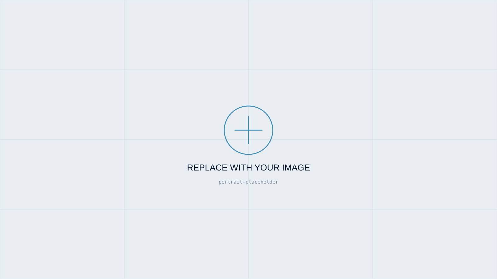

01
Machine Learning Based Anomaly Detection in Industrial Pusher Furnaces
Research on suitable machine learning methods for detecting anomalies in multivariate industrial time-series data from an industrial pusher furnace.
View Project →Industrial Automation · Machine Learning · Industry 4.0
I am currently studying Interactive Technologies with a focus on Industry 4.0 at the University of Applied Sciences St. Pölten. My interests include industrial automation, machine learning, process data analysis and the development of data-driven solutions for industrial applications.

My work sits at the intersection of industrial automation, electrical engineering and manufacturing — applying machine learning and process data analysis to build data-driven solutions for Industry 4.0.
I focus on turning complex industrial process data into actionable insight: understanding multivariate time-series, detecting anomalies, and contributing to the optimization of real production systems through practical, methodologically sound approaches.
Research on suitable machine learning methods for detecting anomalies in multivariate industrial time-series data from an industrial pusher furnace.
View Project →Get in touch about research, collaboration or industrial data-driven projects.